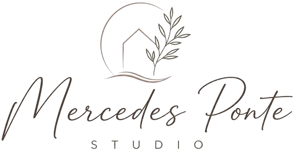

Del 1 al 15 de octubre · Serie «Lo que me traigo»
Lugar por lugar: qué filmar y qué decir, para que el viaje vuelva convertido en reels sin que se te vuelva trabajo.
La idea
Se acuerdan de ese hotel, de la energía de esa habitación, de cómo estaban ellas ahí. Este viaje es tuyo: mostrales cómo se lee un lugar que te hace bien, y cómo se lleva a una casa.
Todo lo que filmes tiene que poder volver a casa.
Lo que sale del viaje
No hace falta que salga todo. Con cuatro lugares bien filmados ya hay reels para dos meses.
Para todo el viaje
Cámara de atrás, vertical, en 4K.Video normal, sin filtros. Ya lo tenés configurado así.
Cada toma, quieta y larga.Contá hasta cinco antes de moverte y dejá correr 10 a 15 segundos. Si te movés, muy despacio y con el estabilizador.
Para hablar, la luz de frente.Temprano o a la sombra, nunca con el sol atrás. El celular en el trípode a la altura de tus ojos, o que te filme quien te acompañe.
A los lugares famosos, temprano.En octubre amanece cerca de las siete: hasta las ocho y media casi no hay nadie, y la luz es más linda.
Cuando un lugar te haga bien, pará y decí por qué.A cámara, con tus palabras, dos o tres veces. Si te trabás, no cortes: volvé a empezar la frase. Eso vale más que cualquier toma linda.
A la vuelta, todo por Drive o iCloud.Nunca por WhatsApp: los videos llegan achicados y no se pueden usar.
Antes de salir: lugar libre en el teléfono (diez minutos de video en 4K ocupan cerca de 2 GB), el micrófono y el estabilizador cargados, y el peludito del micrófono en la cartera. En la costa el viento se come la voz. Y el micrófono en M, como siempre.
A mitad del viaje: con el wifi del hotel, subí a Drive lo de los primeros días. Te libera lugar en el teléfono y, si le pasa algo, no se pierde nada.
Lugar por lugar
En cada uno hay una idea para decir a cámara (con tus palabras, no hace falta memorizarla) y las tomas para tildar. Lo que tildás queda guardado en tu teléfono.
El Panteón, apenas abre. Más tarde se llena y el círculo de luz queda tapado de gente. Luz e intención
Una forma de decirlo
Este lugar tiene casi dos mil años y funciona como un reloj.
No tiene ventanas. Tiene un solo círculo abierto, arriba, y por ahí entra un sol que va caminando por las paredes durante el día.
Tu casa también tiene uno de estos relojes. Casi nunca lo miramos.
Es lo primero que miro yo: dónde está la luz a la hora del desayuno, a la hora de leer, a la hora en que llegás cansada.
Porque ahí es donde el cuerpo se va a querer quedar.
Parate de costado a la luz, con el círculo de sol en la pared a tu lado. Nunca detrás de tu cabeza.
Lo que filmás
La galería de arcos del Hospital de los Inocentes, en la Piazza della Santissima Annunziata. Temprano. Si no llegás, sirve cualquier claustro (el de Santa Croce, el de San Marco). Neurointeriorismo
Una forma de decirlo
Esta galería la diseñó Brunelleschi hace seiscientos años.
Mirá los arcos: entre columna y columna hay la misma distancia que de alto. Cada tramo es un cubo.
Nadie que pasa por acá lo sabe. Pero el cuerpo lo registra: acá se camina más despacio.
Cuando algo tiene su medida, la cabeza deja de trabajar. No tiene nada que corregir.
En una casa pasa igual. Un sillón a la medida del ambiente, un pasillo con el ancho justo. No se nota. Se descansa.
Lo que filmás
Una comida larga, en una mesa al aire libre: un agriturismo, una trattoria de pueblo. Y si pasás por el Val d'Orcia (Pienza, San Quirico), los cipreses bien temprano, que en otoño amanece con niebla. Biodescodificación
Una forma de decirlo
En la Toscana nadie se levanta de la mesa. Y no es solo por la comida.
Mirá las sillas: con respaldo, anchas, de las que te dejan quedarte.
La silla decide cuánto dura una sobremesa. Si es incómoda, a la media hora todos se paran y la mesa se vacía.
Y la mesa es el lugar donde una familia se encuentra.
Si en tu casa comen y cada uno se va por su lado, antes de pensar qué les pasa, fijate en qué están sentados.
Otra idea, si te sale frente al paisaje
Este paisaje parece natural y no lo es: lo fueron dibujando hace más de quinientos años para que se viera así. Por eso descansa tanto mirarlo. Todo está en su lugar y nada te pide nada. Así es el orden que calma.
Lo que filmás
El claustro de Santa Clara (Chiostro di Santa Chiara), en pleno centro. Pasás de la calle más ruidosa de la ciudad a un jardín en silencio en pocos pasos. No es desorden, es invasión
Una forma de decirlo
Afuera está Nápoles: motos, voces, ropa colgada, vida por todos lados. Y acá adentro no llega nada.
Este claustro no lo hicieron lejos del ruido. Lo hicieron en el medio.
En Nápoles nadie vive en silencio. Por eso saben tan bien dónde encontrarlo.
Tu casa tampoco tiene que ser silenciosa. Tiene que tener un lugar donde lo de afuera no entra: ni el ruido, ni el teléfono, ni los pendientes.
Lo que filmás
Un jardín de limones, debajo de las pérgolas (en Sorrento hay varios que se pueden visitar). A media mañana, cuando el sol ya pasa entre las hojas. Neurointeriorismo
Una forma de decirlo
Mirá cómo llega la luz acá abajo: partida, de a pedacitos, moviéndose con el viento.
Es la luz de estar debajo de un árbol. El cuerpo la conoce desde siempre y la lee como un lugar protegido.
Por eso una cortina liviana cambia tanto una casa. No tapa la luz: la parte.
En mi casa lo resolví con voile, de piso a techo. Es lo más parecido a esto que encontré.
Lo que filmás
Ravello, más tranquilo que Positano: la Terraza del Infinito en Villa Cimbrone, o los jardines de Villa Rufolo. O cualquier terraza con una pared atrás y el mar adelante. Feng shui
Una forma de decirlo
¿Por qué acá nadie tiene apuro?
Mirá cómo están hechos estos pueblos: la montaña atrás, el mar adelante. La espalda cubierta y la vista abierta.
La neurociencia lo explica así: el cuerpo afloja cuando puede ver lejos sin sentirse expuesto. El feng shui lo sabe hace siglos y lo llama posición de mando.
Y en casa, sin darnos cuenta, hacemos al revés: el sillón en medio del ambiente, de espaldas a la puerta.
Nadie descansa del todo dándole la espalda al paso.
Acá sopla mucho viento: el peludito puesto en el micrófono.
Lo que filmás
Villa San Michele, en Anacapri: la casa del médico sueco Axel Munthe, con su jardín y su pérgola sobre el mar. Temprano, antes de que suban los grupos. Desde cero
Una forma de decirlo
Esta casa la hizo un médico sueco, Axel Munthe. Se enamoró de este lugar de muy joven y tardó años en poder construirla.
Antes de tener un plano, ya sabía cómo quería vivir acá. Lo dejó escrito: abierta al sol, al viento y a la voz del mar. Y luz, luz, luz por todas partes.
No dibujó una casa. Describió una vida.
Es lo que hago con cada persona que está por construir. Antes de diseñar una casa, diseñemos la vida que va a suceder dentro de ella.
¿Estás por empezar una obra? Escribime HOGAR y lo pensamos desde el primer plano.
Otra idea, si te sale en las calles blancas
Acá casi no hay esquinas: techos redondeados, bordes suaves, arcos. El cuerpo se relaja frente a una curva; una esquina lo pone en guardia sin que te des cuenta. Una mesa redonda, el brazo curvo de un sillón. Son detalles, y el cuerpo los nota antes que vos.
Lo que filmás
En el hotel, y en cualquier lugar
Tomas que no dependen de la ciudad. De acá salen el arranque de la serie y la portada de cada reel.
Sentada en la cama o al lado de la valija abierta, con la luz de la ventana en la cara. Orden como regulación
Una forma de decirlo
Hace días que vivo con lo que entra en una valija. Y no extraño nada.
En casa tengo el triple de cosas y siempre siento que algo falta, o que algo sobra.
La diferencia no es la cantidad. La valija la armé eligiendo. La casa se fue llenando sola.
Y lo que se queda sin que lo elijas casi nunca es descuido: suele tener algo guardado adentro. Un regalo, una etapa, alguien.
Cuando vuelva no voy a vaciar nada. Voy a mirar mi casa como miré esta valija.
En el hotel
En cualquier lugar
Un reel con todo el viaje
Lo armamos con lo que filmes en cada lugar. Vos solo decís esto a cámara, donde quieras.
Una forma de decirlo
Italia tiene una costa que te envuelve, una Toscana que te baja a tierra, ciudades que te encienden y otras que te hacen pensar.
Y casi siempre hay una que se te queda adentro más que las otras.
No es gusto. Muchas veces es tu Luna.
Lo que te hizo bien en un viaje dice mucho de lo que tu casa todavía no te está dando.
Vos sabés de esto más que nosotros: cambiá cualquier lugar o elemento que no te cierre.
Mientras viajás: una historia con la pregunta «¿Mar o campo?». Las respuestas nos sirven para este reel.
Si te animás
Es para la publicidad. Una sola toma, dos o tres veces.
En la habitación del hotel o en una terraza, con la luz de frente y algo lindo de fondo, sin que tape tu cara.
Lo que decís
¿Volviste de un viaje queriendo que tu casa se sienta así?
Soy Mercedes Ponte. Hago consultoría de diseño de interiores: te acompaño a darle forma a tu casa desde cómo la querés vivir.
Lo que sentiste en ese lugar no se compra repitiendo los materiales. Se diseña.
Tocá el botón y escribime por WhatsApp.
Lo que no
La cámara de adelante, la del selfie: filma con menos calidad.
Mandar videos por WhatsApp. Llegan achicados.
Hablar con el sol atrás, o a pleno sol del mediodía.
Caras de desconocidos de cerca. De lejos o de espaldas, sí.
Zoom con los dedos. Si querés más cerca, acercate.
Mover el celular rápido de un lado a otro.
Filtros o el modo «Cinematográfico». Video normal.
Filmar donde está prohibido, como la Capilla Sixtina. En negocios y hoteles, pedí permiso.
Lo gastado como protagonista: paredes descascaradas, recuerdos de feria, lo rústico. En persona es hermoso; en tus reels buscamos lo cuidado: la piedra lisa, el lino, la luz limpia.
Y no te obligues. Es tu viaje: si un día no filmás, no pasa nada.
A la vuelta
Una forma de decirlo
De Italia me traje esto.
No lo elegí por lindo. Lo elegí porque cuando lo miro vuelvo a estar ahí.
Por eso no va a un estante con todo lo demás. Va donde lo vea en el momento del día en que más lo necesito.
Lo que traemos de un viaje no guarda el lugar. Guarda cómo estábamos nosotras ahí.